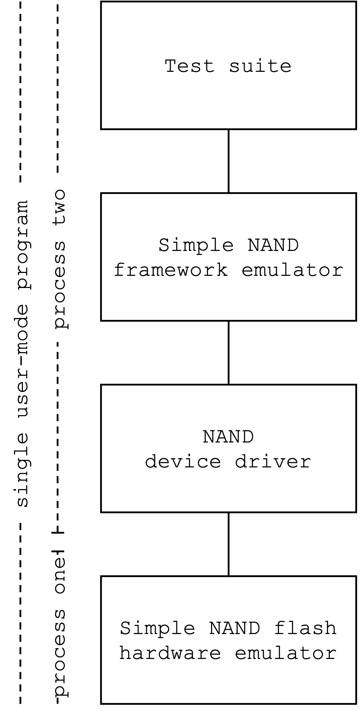

1. Introduction
This is the user manual for Provatek, LLC's second "flaw fix via
Domain-Specific Language (DSL)" V-SPELLS use case distribution. This
use case invites the V-SPELLS research teams to:
- examine a corpus of example legacy C-language device drivers
for an emulated raw NAND flash storage device that correctly
implement composition and loop structure patterns commonly found
in real Linux device drivers,
- examine a corpus of example legacy device drivers that
demonstrate common implementation flaws,
- invent one or more DSLs for implementing such device drivers,
- reimplement the legacy drivers in these new DSLs,
- argue that the new reimplementations are compatible with the
bug-free legacy drivers, and
- demonstrate that the DSLs discourage or rule out the kinds of
flaws found in the buggy legacy drivers.
This use case distribution contains a test rig to support these
activities. The test rig is a user-mode C program for GNU/Linux
operating systems on 64-bit Intel instruction set CPUs. As shown in
the diagram in Figure 1, it
consists of four components:
- Device emulator:
- an emulator for a simple raw NAND storage
device that presents device drivers with an interface that
resembles the one that the Linux kernel presents to real device
drivers. This interface implements a message-passing
composition pattern based on Input/Output registers and General
Purpose Input/Output pins. Section 3
describes this interface in detail.
- Framework emulator:
- an emulator that presents device drivers
with a collection of interfaces that resemble the ones the Linux
kernel's NAND framework presents to real device drivers. Each
interface implements a different composition pattern: function
call through a jump table, instruction streams through a command
interpreter, and modifications to a shared data structure.
Section 4 describes these
interfaces in detail.
- Device driver:
- researchers can use the test rig's makefile
to build an executable that includes one device driver at a
time, choosing either one of the examples included in the
distribution or (with some modification) one of their own
DSL-based reimplementations. The corpus of correct device
drivers demonstrates examples of several loop structure patterns
common to real device drivers; researchers interested in
automated program analysis and reasoning may find these to be an
interesting challenge. Section 5
describes these loop structure patterns. It also provides a
table that indicates which loop structure and framework
interface composition patterns each example driver demonstrates.
- Test suite:
- the makefile builds an executable that includes
a suite of functional tests appropriate for its configured
device driver. Researchers can use these tests to demonstrate
at least partial compatibility between the legacy device drivers
and their DSL-based replacements.
Section 2 presents the low-level details
of how the device emulator works, how the test rig uses 64-bit Intel
CPU hardware watchpoints and software breakpoints to mimic the
semantics of real IO registers and GPIO pins, and how the test rig
must consequently run as a pair of processes with one using the Ptrace
debugging library to trace the other. Section
6 concludes this user manual with detailed instructions on
building and executing the test rig.

Figure 1 - Test rig architecture.
Table of contents